衝突応答
前のページでは衝突検出について学んだ． ここでは衝突後の剛体の運動を計算する衝突応答について説明する．
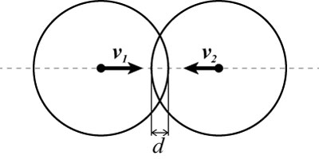
球同士の衝突
簡単化のために上の図のように球同士が正面衝突するケースを考える．
正面衝突なので衝突後には正反対の方向に跳ね返る．
このときの反発後の速度ベクトルを求めたい．
(速度ベクトルの方向がばらばらの場合も，法線方向速度場 を使えば同じとなる)．
を使えば同じとなる)．
二つの球の衝突直前の速度ベクトルをそれぞれ とし，
その相対速度ベクトルを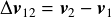とする．
衝突後にはそれぞれの速度が反転することを考えると，衝突後の相対速度ベクトル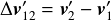
は,
とし，
その相対速度ベクトルを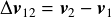とする．
衝突後にはそれぞれの速度が反転することを考えると，衝突後の相対速度ベクトル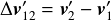
は,

となる．ここでeは反発係数であり，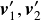を衝突直後の速度ベクトルとした． この式を変形すると以下となる．
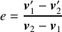
さて，今求めたいのはである． ここで，第1回目で勉強した撃力(Impulse)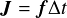を考える． 作用・反作用の法則から2つの球に衝突時にかかる力の大きさは等しいので， 撃力も大きさは等しくなる．ただし，その方向は反対である． よって，

である．ここで， はそれぞれの球に働く撃力である．
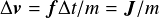より，
はそれぞれの球に働く撃力である．
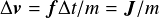より，
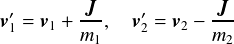
となる．ここで，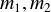はそれぞれの球の質量である． これらを上記の反発係数eの式に代入すると，
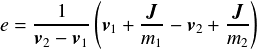
この式を について解くと撃力が求められる．
について解くと撃力が求められる．

後はこのを上の式に代入すれば衝突後の速度が求められる．
法線方向速度場を使った場合は，法線方向 に働く撃力
に働く撃力 を使うと，
を使うと，

となる．ただし，は単位法線ベクトルである．
このように撃力に基づき衝突応答を計算する方法はImpulse-based methodと呼ばれる．
多くの物理エンジンはImpulse-based法を用いている(もちろんBulletも)．
実際には回転も含まれるので，2つの剛体の慣性テンソル と重心から衝突点までの距離ベクトル
と重心から衝突点までの距離ベクトル を用いた
以下の式を用いる．
を用いた
以下の式を用いる．
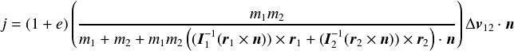
めり込み
上の例では球同士がめり込んでいる(めり込み量d)． これは現実世界の現象で考えるととても不自然である． めり込み量分それぞれの球を反対方向に動かせばこれは解決できる． タイムステップ分動いた量を考えれば，めり込まなかったとしたときの次のタイムステップにおける位置が計算できるからである．
しかし，この方法には大きな問題がある． それは3つ以上の物体が存在し，それらが複合的に衝突した場合である． 下の図を見てほしい．赤，青，緑の3つの球が衝突している． 赤と青のめり込みを破線の青球のように移動させて解決したとする． そうすると今度は緑球とめり込みが発生する． 緑球とのめり込みを解決しようとすると赤球とめり込みが発生する． といった具合に青が振動する結果となる． もちろん剛体の数が少なければ，処理を反復させていればそのうち解決するかもしれないが， 数が多いとそれも難しくなる．
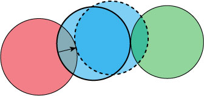
3つの球同士の衝突
多くの物理エンジンではこれをPenalty-based methodと呼ばれる方法で解決する．
これはめり込んだ量に応じた反力を返すことでめり込みを解消する方法である．
下の図のようにめり込んだ位置にバネを仮定し，そのバネの反発力を上記の撃力計算に組み込んでやることで，
フックの法則 より，めり込み量
より，めり込み量 が大きいほど大きな力が働く．
が大きいほど大きな力が働く．
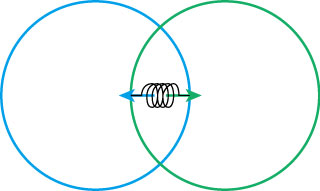
バネを使っためり込み解決
バネを使った方法の大きな問題点はばね定数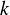の設定である． の設定はユーザにゆだねられるが，この大きさ次第ではシミュレーションが非常に不安定になってしまう． 解決策としてはバネだけでなくダンパなどを設定する方法がある． また，Bulletではこれらのの解決にConstraint-based methodと呼ばれる方法を用いている．こちらについては詳しくは次回説明する．
摩擦
物体がぶつかったときに働く力は法線方向だけではない． 衝突面の表面に平行な方向(接線方向)にも働く． この力を摩擦力(Friction Force)という． 摩擦力自体は物体同士の微小な凹凸や吸着などによって引き起こされると考えられており， 力学的には表面へかかる垂直方向の力に比例する摩擦力がかかる． 摩擦力は物体が表面上で移動する方向の逆方向に働き，その大きさは
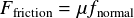
となる．ここで，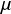は比例定数であり，摩擦係数と呼ばれる． この法則はクーロンの摩擦法則と呼ばれる．
摩擦力には静止摩擦力(Static Friction)と動摩擦力(Dynamic Friction)があり，
止まっている状態から物体を動かす直前の摩擦力(最大静止摩擦力)より動摩擦力の方が小さくなる．
さて，今，ある物体が床に衝突し，摩擦により静止したとする．
この静止した物体を動かすためには最大静止摩擦係数 を使って，
を使って，

の力が必要である．ここで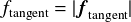は接線(Tangent)方向に働く力の大きさである． 逆に力がこれ以下だと物体は静止したままである． しかし，静止した物体にも重力が働いているので，床が水平だとしても上記の法線方向の衝突応答処理が行われてしまう． これは不必要な振動を引き起こす原因にもなり，かつ，計算コストを考えても無駄である． これらを避けるためにBulletではスリープ状態というものが定義されている． 剛体オブジェクト(btRigidBody)がスリープ状態かどうかは，isActiveメンバ関数や getActivationStateメンバ関数の返値をチェックすると分かる．
静止状態は計算処理を軽減する上で有用であるが，アプリケーションによってはスリープ状態にしないオブジェクトを設定したい場合もある． その場合は，setActivationState関数にDISABLE_DEACTIVATIONを指定する．
body->setActivationState(DISABLE_DEACTIVATION);
上記はオブジェクトbodyがスリープ状態にならないように設定している．
練習問題1
BulletではbtRigidBodyのsetRestitutionメンバ関数を用いると反発係数を変えられることは， 第2回目の実験資料の課題3において述べた．同様にして，摩擦係数はメンバ関数setFricitionで設定できる． これらを用いて摩擦係数の値や反発係数の値をいろいろ変えて試してみよう．なお，摩擦係数のデフォルト値は0.5である．
練習問題2
getActivationStateメンバ関数を使ってスリープ状態のオブジェクトを色分けして描画してみよう．また， setSleepingThresholdsメンバ関数(平行移動，回転に対する閾値を設定)を使うとスリープ状態になる速度の閾値を設定できる． 閾値を変えて実行するとどうなるのか確かめてみよう． このときDISABLE_DEACTIVATIONを指定したオブジェクトがスリープ状態にならないことも確かめてみよう．